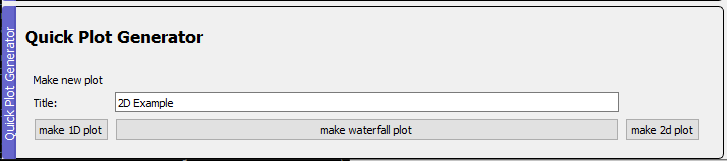

What is the Analysis Plot Panel?
The analysis plot panel is a tool to plot data produced from labscript suite based experiments in an fast end efficient way. It is directly linked to the lyse package using single-shot routines.
The code has been developed by the laboratory of quantum gases. Check our github page for other useful tools.
The module is based on three packages:
pyqtgraph: An ultra-fast plotting libraryh5py: A python package to read data from h5 filespyqt5: The python wrapper of the qt5 GUI library
The panel is made up of individual plots, the shot selector and the quick plot generator. The individual plots can either be customized plots (implemented in the user_plot.py file) or it can be one of the tree different types of so-called quick plots (Quick1DPlot, QuickWaterfallPlot and Quick2DPlot). These allow the user to plot trends of the acquired data without having to write a special plotting function. For more information on the installation check our installation page.
Shot Selector
In the shot selector one can specify for which shot/shots the data should be plotted. For plots that show data from a single shot, the slider or the text field on the left of it can be used to choose the shot. The index selector text field is used to specify the subset of shots to be show in the analysis plot panel.
Examples:
:The selection of indices (shots) for the slider and the quick plots are the complete list in lyse2:5, -1The selected indices are 2,3,4 and -11:10:2The selected indices are every odd number up to 10
Quick Plot Generator
As the name suggest, the quick plot generator can be used to make quick plot. These can be used to show data of multiple shots in lyse in a fast way.

In order to generate a plot, one has to specify the title of the plot (here: 2D Example) and then press the right button to either generate a Quick1DPlot, QuickWaterfallPlot or Quick2DPlot.
Quick1DPlot
A quick 1D plot can show multiple plots of single valued results (a single number per shot). An example would be plotting atom number as a function of shot number. In the plot parameters section one can set the title, xlabel, ylabel and activate the grid. The units field should be filled with the units of the data (ex: s for second). The plot will then change the units that the ticks are as readable as possible (0.001s -> 1 ms).
Quick Waterfall Plot

Quick waterfall plots allow the user to plot array-valued results as a function of single-valued results. The example above shows cavity spectra as a function of the shot number. The plot parameters are the same as for the Quick1DPlot.
Quick 2D Plot

Quick2DPlots are the similar to Quick1DPlots. The difference is that they plot a single-valued result as a function of two other single-valued results.
How to make a custom plot?
Each plot is made up of two parts, the Plot Widget and the Data Extractor. The Plot Widget specifies how the results are shown and the Data Extractors specify how the results are extracted from the h5 files. The usual template class AnalysisPlot (found in __init__.py file) consists of tree parts, the actual plot, a table to show single valued data (like atom numbers) and a title/warning field. For the plots the pyqtgraph library is used. In the following, I will go through the steps to make a new plot. I will explain this on the example of the SpectrumPlotthat can be found in the user_plots.py file.
PlotWidget
-
Write a new class in the
user_plots.pythat inherits from theAnalysisPlotclass. With the following things in the__init__: -
Add plots to the
pyqtgraph.GraphicsLayoutWidgetnamedself.plotsusingself.plot = self.plots.addPlot(). This will generate aPlotWidgetnamedself.plot. - Add a curve to the
PlotWidgetwith
self.curve_hist = self.plot.plot(args)
The style of the plot can be adapted with the args. Check the documentation of pyqtgraph for the syntax. One can also add x- and y-labels to the PlotWidgetwith self.plot.setLabel(...)
- The next important step is to write an update function. This function takes the results of the shot in terms of
numpy.arrays and updates the curves with functions like
def update(self, freqs, counts):
self.curve_hist.setData(freqs, counts)
Here one can also add data to the table with:
self.table.setData(tabledata)
For the generation of tabledata check the syntax of the TableWidget in pyqtgraph.
DataExtractor
-
Write a new class that inherits from
DataExtractorinuser_data_extractors.py. Specify in the__init__some identifying keyworks. (here: name and frametype of the spectrum). Like this the class 'knows' from which spectrum it should extract the data. -
Write the function
extract_datain the following structure:
def extract_data(self, h5_path, h5_file = None):
#make run instance
run = lyse.Run(h5_path)
imaging = 'cavity_spectrum'
#make identifying keyword here: spectrum_name
name = self.name
frametype = self.frametype
spectrum_name = name+' '+frametype
try:
#write functions here to extract the data:
#make sure that you hand over the h5_file. This can lead to a speedup
#since then the files doen't get opened for every variable
n_photons = run.get_result_array(imaging, spectrum_name+' n_photons', h5_file = h5_file)
freqs = run.get_result_array(imaging, spectrum_name+' freqs', h5_file = h5_file)
except:
#write here what should happen if the data could not be found
import traceback
traceback.print_exc()
freqs, n_photons = np.array([0.,1.]), np.array([0.,1.])
return freqs, n_photons #These are the arguments that are given to
# the update function of the PlotWidget.
Add plot to plot panel
The last step is to make sure that the PlotWidget and DataExtractor are added to the analysis plot panel. For this one should call fm.ap.add_plot_dock(plot_name, AnalyisPlot, DataExtractor).